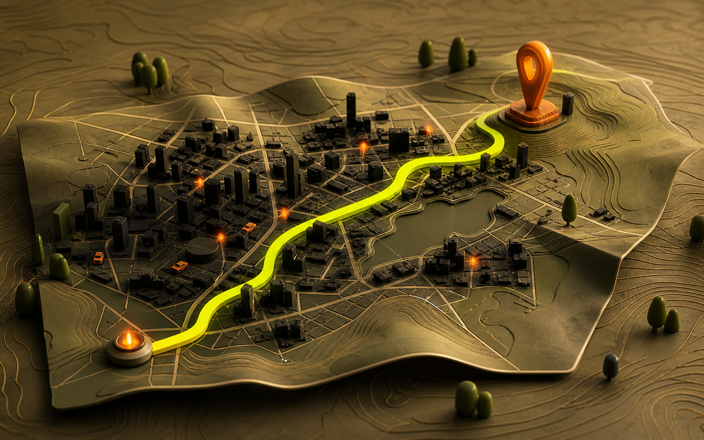

Pünktlich ankommen
Für Schule, Arzttermin oder Treffen zeigt die App, wann man losgehen oder losfahren sollte.
Anwendung 03 · Mobilität
Ob Schulweg, Arzttermin oder Wochenendausflug: Navigation kann Verkehr einordnen und passende Wege vorschlagen. Vor Ort entscheidet trotzdem immer der Mensch.

Im Alltag genutzt
Navigation hilft nicht nur beim Abbiegen. Sie kann vor dem Losfahren Zeiten vergleichen, unterwegs Störungen melden und auf dem letzten Stück einen passenden Zugang oder Parkplatz zeigen.
Für Schule, Arzttermin oder Treffen zeigt die App, wann man losgehen oder losfahren sollte.
Bei Baustellen, Unfällen oder dichtem Verkehr werden alternative Strecken und ihre Nachteile sichtbar.
Auch Fußwege, Fahrrad, Bus und Bahn lassen sich vergleichen – mit Daten, die sich schnell ändern können.
So zeigt es sich im Alltag
Die App zeigt verschiedene Wege und die erwartete Ankunftszeit.
Ein Stau oder eine Sperrung verändert die Empfehlung während der Fahrt.
Parkplatz, Haltestelle oder Eingang helfen beim Ankommen am Ziel.
Praxisbeispiel aus der Realität
Google Maps beschreibt, wie Verkehrsvorhersagen und aktuelle Meldungen alternative Routen zeigen können. Die vorgeschlagene Strecke ist eine Berechnung – Verkehrszeichen und die Situation vor Ort gelten immer zuerst.
Offizieller Beitrag · Mobilität
Ein Herstellerbeispiel dafür, wie Karten-, Verkehrs- und Meldedaten im Alltag zusammenkommen.
Beim Laden wird eine Verbindung zu Google hergestellt.
Quellen & Vertiefung
Auch intelligente Navigation kann Baustellen, kurzfristige Sperrungen oder Situationen vor Ort falsch einschätzen.
← Zurück zu den Anwendungen